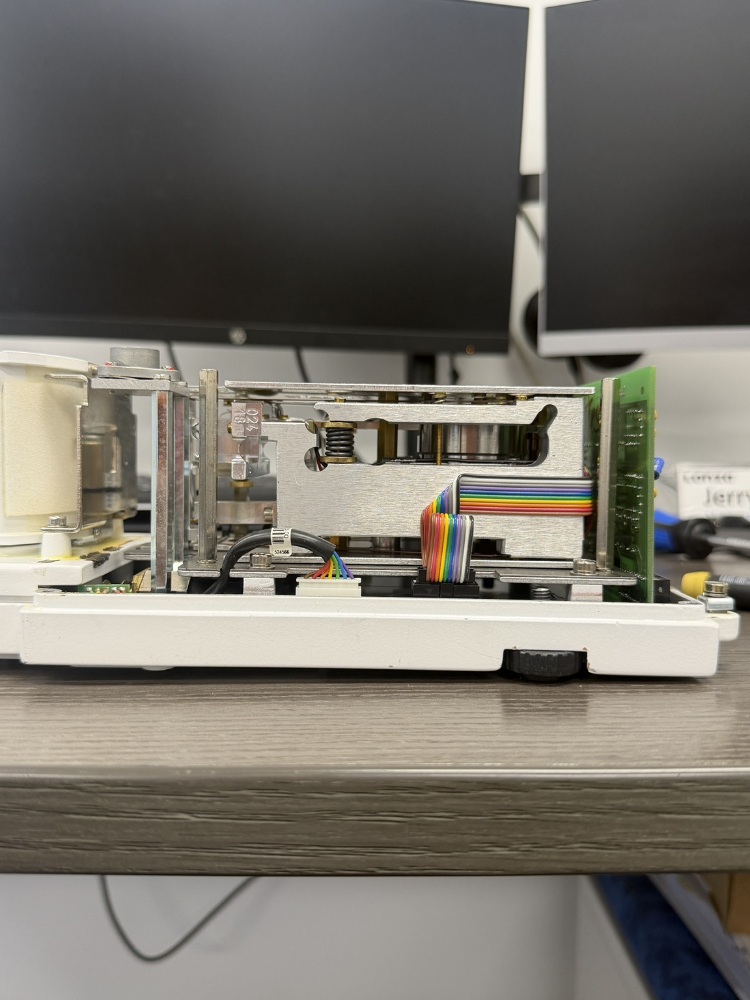
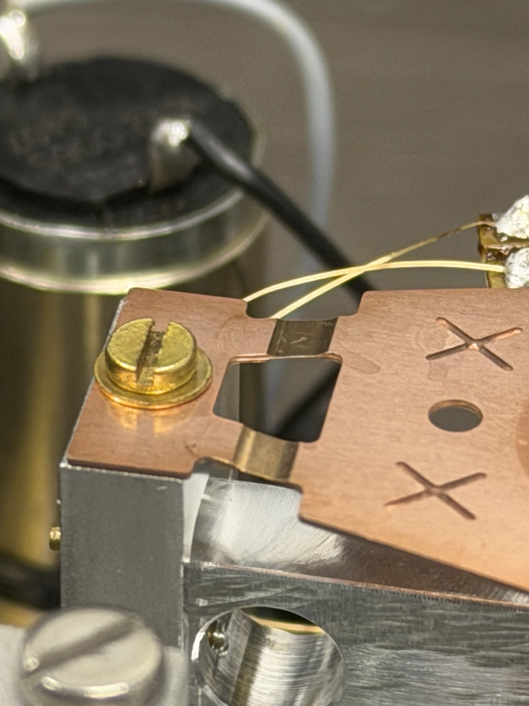

RELIABILITY / RCA
Xcelodose 600S investigation
Led failure investigation across multiple microbalances using physical inspection, Gemba observation, 6M/FMEA thinking, alignment checks, maintenance history, and comparison across failed units.
Led failure investigation across multiple microbalances using physical inspection, Gemba observation, 6M/FMEA thinking, alignment checks, maintenance history, and comparison across failed units.
Maintenance-request workflow built around guided intake, urgency logic, assignment, reminders, searchable records, and a separate maintenance-facing review experience.
Lead the lower-limb exoskeleton program across R&D, mechanical design, controls, electrical integration, testing, safety, procurement, budgets, onboarding, outreach, and design reviews.


Lower-limb exoskeleton program spanning mechanical design, actuation, embedded controls, gait analysis, testing, and multidisciplinary project leadership.
Reliability investigation across failed microbalances and encapsulation equipment using equipment inspection, manufacturing observation, alignment checks, maintenance history, 6M analysis, and corrective documentation.
Power Apps maintenance-request system with guided intake, urgency logic, assignment, reminders, attachments, and searchable records.
Human-motion research using IMUs and Vicon plus embedded sensor packaging, PCB-support work, validation, data-quality review, analysis, and technical documentation.
5-DOF tendon-actuated robotic hand using ESP32, PCA9685, servos, Python, MediaPipe, calibration, testing, and computer vision.
SolidWorks wind-up steam locomotive with assembly/part drawings, BOM, motion review, and 3D-print-oriented design.
Two-player MATLAB game with selectable shapes, attack/counter logic, animated graphics, health tracking, and state progression.
Autonomous / RC educational robot combining a custom platform, embedded control, Pixy2 vision, mode switching, and local web control.
Production work centered on repeatability, precise measurement, fermentation, temperature control, sanitation, equipment operation, and daily output.
Technical-program outreach and EXO demonstrations at general body meetings and student-facing events.